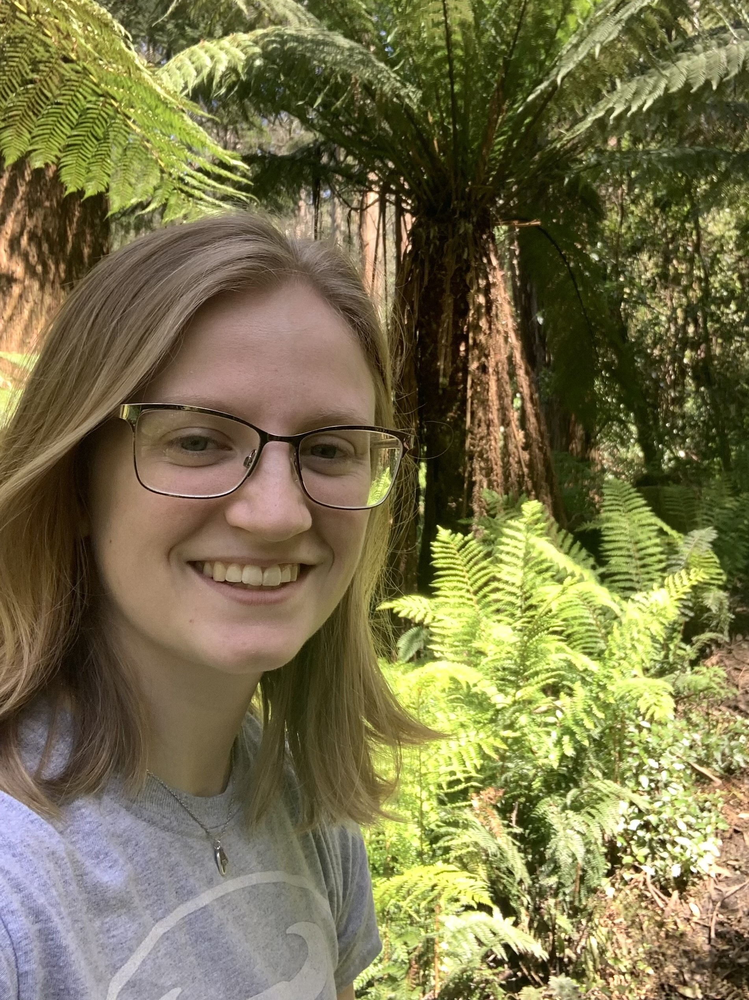

About Me
Hi, my name is Jackie and I am a recent graduate of Illinois Institute of Technology. In December of 2023, I received my bachelor's degree in Computer Science as well as my master's degree in Data Science. Currently, I am looking for full-time entry-level positions starting immediately! I prefer in-person work and am willing to relocate if the position requires it.
Regarding my career-oriented interests, some of my favorite courses over my college career were Systems Programming (351), Data Privacy and Security (528), Data-Intensive Computing (554), and Machine Learning (584). In my time researching at IIT, I've developed an interest in system resource management, algorithm efficiency, and low-level device programming. Looking forward, however, I am looking to master the application of data science and machine learning, along with other use cases of big data. I've always been passionate about cryptocurrency, and through some of my recent industry experience I had the privilege of getting involved in the world of blockchain and open source development, which you can read more about on my Projects page. Someday, I would also love to delve into the field of quantum computing, as it will be very disruptive to crucial blockchain encryption algorithms, and will enable a completely new and different way of solving hard computational problems.
University Involvement
Over the course of my academic career at IIT, I served for five years on the executive board of ACM-W, our school's female chapter of Association of Computing Machinery. I started out as the social media manager, worked my way up to treasurer, and eventually became president for my last two semesters. Some of my responsibilities included leading executive meetings, delegating tasks to the board, planning events and conference travel, and communicating with administration and general body. We hosted a variety of workshops, panels, and social events, all which benefitted the women of IIT by fostering a community of professional, successful, and supportive peers. Being involved in the club was so fulfilling! I loved staying after our events to have conversations with women wanting to get involved with the club, and was so rewarding to watch us grow and prosper over my career!
Another way I was involved at the university was through my position as a teaching assistant for our data structures and algorithms class. I found TAing to be super rewarding as I had the opportunity to share the knowledge I had learned with students who needed it to grow in their careers as well. Preparing demos for these students also helped me personally develop my understanding of data structures and algorithms, as well as sharpen my communication and presentation skills. Many students came to me feeling overwhelmed in the class, and I really gained a lot of satisfaction in taking the time to help them master the topics.
Personal
In my free time, I always enjoy staying active. I've played a lot of sports in the past, including soccer, volleyball, basketball, and track. In fact, I played 3 years on the IIT's women's competitive soccer team! Playing for IIT and many other teams over the years has taught me so much about self-accountability, work ethic, and trusting my teammates. Nowadays, I have been more focused on developing my career, but I still stay moving with weight training, running, and kickboxing!
Another strong passion of mine is making music. In case you missed it on my resume, I have a minor in music in addition to my technical degrees! I have studied classical piano for over 15 years now, along with a couple years in the percussion section of my high school's concert, marching, and jazz bands. One of my favorite pastimes is composing my own original pieces, and someday I would like to transcribe them and record a collection for public release! Music is near and dear to my heart, but it has also helped me sharpen many employability skills over the years. Studying music has encouraged me to pay attention to details, be disciplined in time management, and express ideas nonverbally.
Most importantly, however, I love to spend time with my friends and family. Work-life balance is very important to me, and building relationships is something I value much more than knowledge, professional or otherwise. I know that the people I interact with have influenced me in so many ways to make me the person I am today, so I hope that my own interactions with those around me inspire others like they have for me!